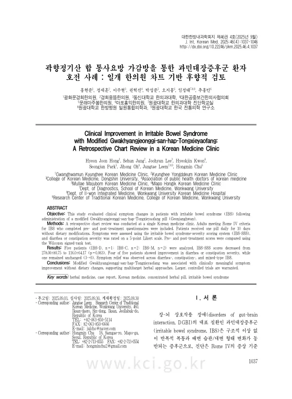

Clinical Improvement in Irritable Bowel Syndrome with Modified Gwakhyangjeonggi-san-hap-Tongxieyaofang: A Retrospective Chart Review in a Korean Medicine Clinic
Hong HJ, Jung S, Lee J, Kwon H, Park S, Oh J, Leem J, Chu H
The Journal of Internal Korean Medicine 46(4):1037-1046

첫 장 · 오픈액세스First page · open access
논문 소개Summary
과민대장증후군은 구조적 이상 없이 복통과 배변 습관의 변화가 되풀이되는 병으로, 장과 뇌의 상호작용 장애를 대표합니다. 설사형과 변비형, 혼합형으로 나뉘는데 서로 상반된 아형에 같은 처방을 쓸 수 있는지는 분명하지 않았습니다. 곽향정기산에 통사요방을 합한 가감방은 한의 임상에서 이 병에 자주 쓰이는 처방입니다.
한 한의원의 진료기록을 후향적으로 검토했습니다. 로마 기준 4판을 충족하고 복용 전후 설문을 모두 마친 성인이 대상이었고, 식이 조절 없이 하루 한 환씩 10일 동안 복용했습니다. 과민대장증후군 중증도 점수와 설사·변비 정도를 5점 리커트 척도로 재고 윌콕슨 부호순위검정으로 견주었습니다.
분석에 들어간 사람은 다섯 명으로 설사형 1명, 변비형 2명, 혼합형 2명이었습니다. 중증도 점수는 278.00에서 116.00으로 약 58% 낮아졌고 어떤 환자는 345점에서 50점으로 줄었습니다. 다섯 명 중 네 명이 설사나 변비의 중증도에서 호전을 보였고 한 명은 3점에서 3점으로 변화가 없었습니다.
중요한 것은 이 감소가 통계적으로 유의하지 않았다는 점입니다. 윌콕슨 부호순위검정에서 p값은 0.063이었습니다. 저자들은 표본이 다섯 명이라 유의성을 얻기 어려웠다고 적으면서, 평균 점수의 감소를 통해 임상적 가능성을 확인한 데 의의를 두었습니다. 점수가 절반 넘게 줄었다는 사실과 그것이 우연일 가능성을 배제하지 못했다는 사실은 함께 읽어야 합니다.
한계는 더 있습니다. 대조군이 없는 후향 검토이고 대상자의 성별과 연령이 조사되지 않았습니다. 그럼에도 서로 상반된 아형에서 같은 처방으로 호전이 관찰되었다는 점은, 장의 과민성과 환경 조절이라는 공통 기전을 겨냥하는 전략이 여러 증상군에 적용될 수 있음을 시사합니다. 저자들은 더 큰 규모의 무작위 대조연구로 검증할 필요가 있다고 결론지었습니다.
Irritable bowel syndrome — recurrent abdominal pain with changes in bowel habit, in the absence of structural abnormality — is the representative disorder of gut-brain interaction. It divides into diarrhoea-predominant, constipation-predominant and mixed types, and whether one prescription can serve such opposed subtypes was unclear. Modified Gwakhyangjeonggi-san combined with Tongxieyaofang is frequently used for this condition in Korean medicine practice.
Records from one Korean medicine clinic were reviewed retrospectively. Adults meeting the Rome IV criteria who completed both pre- and post-treatment questionnaires were included, taking one pill daily for ten days without dietary modification. The IBS Severity Scoring System and the severity of diarrhoea or constipation on a five-point Likert scale were compared using the Wilcoxon signed-rank test.
Five patients entered the analysis: one diarrhoea-predominant, two constipation-predominant, two mixed. Severity scores fell from 278.00 to 116.00, a reduction of about 58%, with one patient falling from 345 to 50. Four of the five improved in the severity of diarrhoea or constipation; one was unchanged, at 3 both before and after.
What matters is that this reduction was not statistically significant: the Wilcoxon signed-rank test gave p = 0.063. The authors write that significance was hard to reach with five participants, and locate the study's value in the clinical possibility indicated by the fall in mean scores. That the score more than halved, and that chance cannot be excluded as the explanation, must be read together.
Further limitations follow. This is a retrospective review without a control group, and the sex and age of participants were not recorded. Still, that improvement was observed with one prescription across opposed subtypes suggests that a strategy targeting the shared mechanisms of gut hypersensitivity and environmental regulation may apply across symptom groups. The authors conclude that verification through larger randomised controlled studies is needed.
인용Cite
Hong HJ, Jung S, Lee J, Kwon H, Park S, Oh J, Leem J, Chu H. Clinical Improvement in Irritable Bowel Syndrome with Modified Gwakhyangjeonggi-san-hap-Tongxieyaofang: A Retrospective Chart Review in a Korean Medicine Clinic. The Journal of Internal Korean Medicine. 2025;46(4):1037-1046. doi:10.22246/jikm.2025.46.4.1037